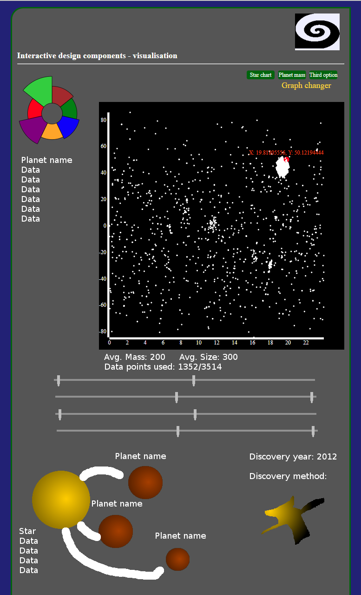

Click to enlarge...
The user is intended to be drawn to the colour of the aster graph which represents the planet of focus. This will be the most interesting part of the design, which will lead to the large volume of stars on the chart to the right. The planet aster graph will break down values of the data.
Clicking on a dot point on the star chart will change information on the whole page.
- The aster graph will transition in the outer radius of the graph. To show that there is correlation, and to garner interest to the individual data pieces of the graph.
- The planet and stars relation in the bottom left will change, with new stats being brought up.
- The discovery method in the bottom right will change, and extra information will come up with the type of discovery.
There are two layouts for the star chart, one is the size/mass distribution and the other is physical location of the stars relative to the earth in a 2D map (default).
Their datasets will be configured by minimum and maximum values for planet radius, planet mass and year of discovery (slider or input). There will be a discovery type as another option but in radial format to add interest and a more space-type feel to the appearance.
The design of the website is about grasping the history of discovery without having to read much information. By discovering each part as they become accustomed to it, a user will only retain information as they interact. The top half of the page is immediately interactive and is the main focus of the site. The user will use and experiment to understand how the website reacts. As they get more and more accustomed to the more interesting and appealing graphics, the user can slow down and absorb more distinct information that explains the data.
The user is encouraged to interact with specific features by common themes. Highlighting and/or changing the size of an object encourages them to click. Sliders are understood to be dragged. Unconventional or small foreground shapes (which are interactive) contrast to smooth and plain shapes which represent the background. The combination of colours and shapes indicate very quickly what is interactive and simple words or large shapes are understood as static.
The aster chart has been chosen for planets and stars due to the data types. A pie chart was suitable for the number of data items, but the data did not compare with each other. The change in shapes identify that there is less correlation between each section, but is still relevant to the planet and/or star. This has been further emphasised with highlighted sections and data hovering over each arc.
The simple scatter graph was most useful for getting all the star information onto one page, and to highly contrast the intense instance that is portrayed by the aster graph. The scatter graph portrays everything as a bigger picture to give scope of the information provided.
The interaction of the whole site is based on the simple left-to-right flow that we are used to, coupled with the standard side-bar and top-bar menu. Furthermore, the smaller, intense items have colour and visually different display to grab attention first. With the various elements used, there has been no tutorial provided, relying on understood values, symbols and layout to elicit a response and interaction from the user.
The dataset is wholly based on the specific statistics of each planet and star where applicable. The position of the planets and the size and mass of the stars are also displayed as important information for the user through the star graph, but it is not the most important, despite grabbing significant amount of attention.
Star information is difficult to put together due to the focus being on exoplanets. The information is downplayed due to the dataset, and placed as supplementary information.
Details such as the position of the stars are significant for the website, but they do not actually get represented much to the user except as a relative visual graphic.
Age has been removed entirely, and will only be delivered as an exception case to the aster graph applicable.
General comparisons of the data will be made, including min, max, mean, but they do not provide significant information to the user.
All the data has very little comparison data, excepting the planet mass, planet size, discovery year and discovery type, which will be provided by the user.
{kind=link}